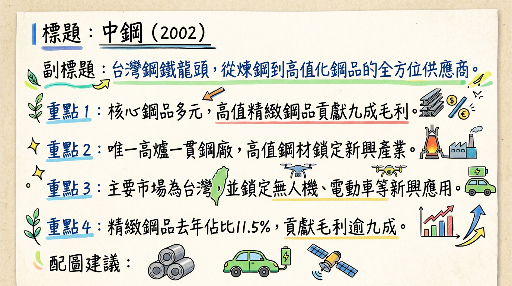
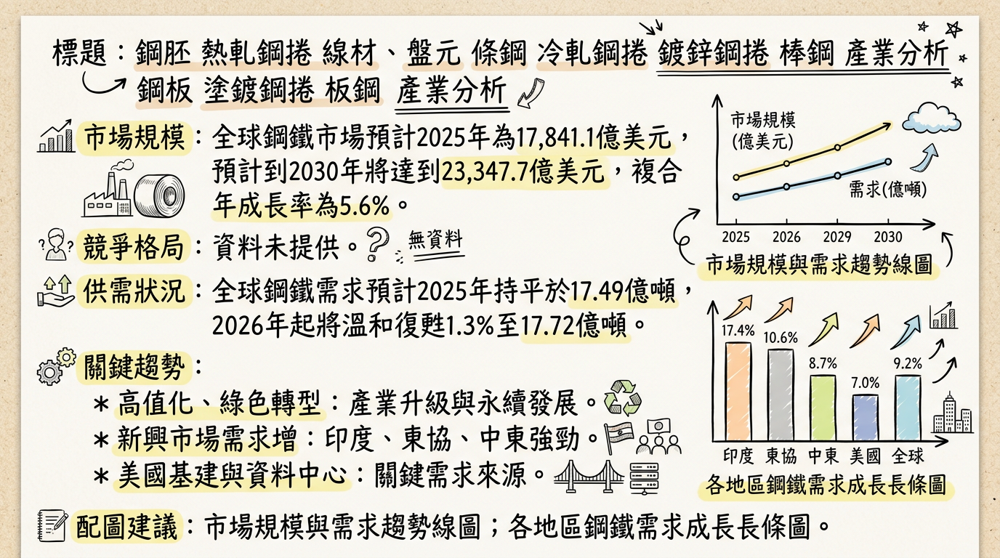
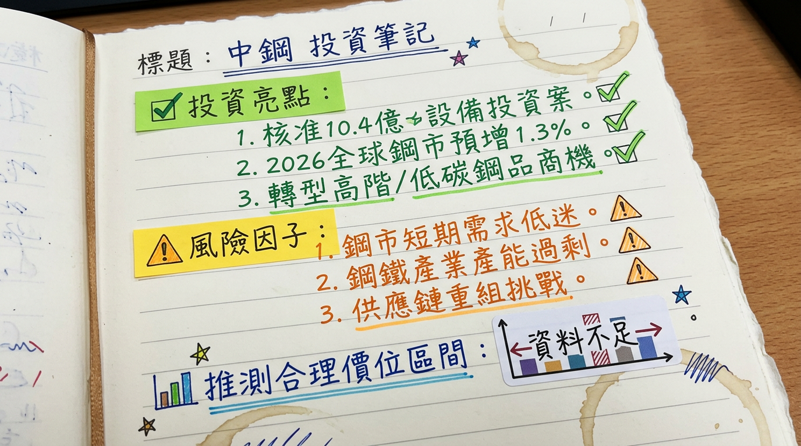

2002 中鋼 深度研究報告
一句話摘要
中鋼 (2002) 歷經2025年產業逆風與首度年度虧損（每股淨損0.29元），在全球鋼市觸底與自身高值化轉型策略帶動下，預期2026年將溫和復甦，法人預估EPS有望達0.06至0.42元，經營團隊目標實現「穩定獲利」。
公司概覽
中鋼（2002）是台灣唯一具備高爐的一貫作業鋼廠，為台灣鋼鐵產業龍頭。主要業務涵蓋鋼品的設計、製造、買賣、儲運等，並積極朝向高值化產品發展。
主要產品線
- 鋼胚
- 熱軋鋼捲（含一般料、軋延料、中高碳、工具鋼）
- 線材、盤元、條鋼
- 冷軋鋼捲（含一般料、中高碳、工具鋼、製桶）
- 鍍鋅鋼捲（熱浸鍍鋅鋼捲、電鍍鋅鋼捲，應用於抗指紋、建材、烤漆料、家電、電腦等）
- 棒鋼
- 鋼板（含A36/SS400、SM570系列、船板等）
- 塗鍍鋼捲
- 板鋼
營收結構（精緻鋼品貢獻度）
中鋼近年積極轉型高值化策略，精緻鋼品貢獻度日益提升。
| 項目 | 2025年出貨量佔比 | 2025年毛利貢獻佔比 |
|---|
| 精緻鋼品 | 11.5% (約78.7萬噸) | 超過九成 |
| 一般鋼品 | 約88.5% | 低於一成 |
公司研發重心鎖定無人機、機器人、電動車及低軌衛星等高成長產業所需的高品質鋼材，為未來營收結構轉型奠定基礎。主要生產基地位於台灣，包含中鋼自身廠區及子公司中龍鋼鐵。
核心競爭優勢
台灣唯一一貫化大鋼廠： 擁有高爐，具備從鐵礦砂到鋼品的完整煉製能力，規模經濟與成本優勢顯著。
高值化產品領先： 積極佈局電動車（超能效電磁鋼）、無人機、機器人（高精密鋼材）、低軌衛星等高端應用，精緻鋼品雖僅佔總銷售量11.5%，卻貢獻超過九成的毛利。
綠色製程與永續發展： 領先同業取得多項國際綠色認證，在企業永續評比名列全球鋼鐵業前茅，符合歐盟CBAM等環保趨勢，具備「綠色溢價」潛力。
彈性市場調度能力： 面對國際貿易壁壘與區域性供需變化，能靈活調整產品銷售市場，例如韓國對中國反傾銷後迅速切入。
台灣內需市場穩定基石： 受惠於台灣基礎建設（如台電電網升級）、國防產業自主化（潛艦、軍武高功能結構鋼）及高科技產業發展，提供穩定內需支撐。
財務分析
月營收趨勢
| 月份 | 金額 (億元新台幣) | 月增率 MoM | 年增率 YoY |
|---|
| 2026年1月 | 260.19 | 1.86% | 1.19% |
| 2025年12月 | 255.43 | 0.69% | -13.8% |
| 2025年11月 | 253.68 | 3.7% | -12.59% |
| 2025年10月 | 244.62 | 0.31% | -12.45% |
| 2025年9月 | 243.85 | -1.43% | -8.83% |
| 2025年8月 | 247.40 | 1.43% | -16.41% |
季度數據
| 季度 | 季營收 (億元新台幣) | 毛利率 | 營業利益率 | EPS (元) |
|---|
| 2025年第四季 | 753.73 | 4.83% | 0.47% | -0.03 |
年度趨勢
| 年度 | 全年營收 (億元新台幣) | EPS (元) |
|---|
| 2024實際 | 3,605.36 | 0.13 |
| 2025實際 | 3,171.55 | -0.29 |
法說會重點 (截至2026年3月8日)
- 最近法說會日期： 中鋼曾預計於2025年11月底召開法人說明會，但最新完整資訊需以公司公告為準。
- 管理層發言與Guidance：
*
2025年11月25日法說會指出，全球鋼市需求已於2025年完成打底，2026年起將進入溫和復甦新局面，預期全球鋼鐵需求將回升至17.72億公噸，年增1.3%，增加約2,330萬公噸。
* 2026年2月25日，董事長黃建智宣示：2026年最重要的營運目標為「穩定獲利」，並看好3月中旬即將開出的4月及第二季盤價「大有可為」。
* 2026年2月26日董事會後黃建智表示：2025年是谷底，2026年一定會比2025年好，「穩定獲利是最重要目標」。
* 2026年1月，中鋼與子公司中龍鋼鐵合計出貨量達84萬公噸，較原訂目標80萬公噸超標4.3萬公噸，創近8個月以來新高點。
* 2026年3月盤價，熱軋鋼板、鋼捲、冷軋鋼捲、鍍鋅鋼捲及電磁鋼捲等主要產品，每公噸全面調漲500元（2026年2月2日公告），後續營運展望正面。
* 2026年2月26日，董事會決議投資約
77.57億元，進行肆號高爐第二爐代汰舊換新計畫，預計投資期間為2026年3月1日至2029年8月31日。其中70.48%由營運資金支應，其餘來自借款。
* 2025年11月12日，董事會決議投資6.4億元於煉鋼廠一號扁鋼胚連鑄機鑄模段設備汰舊換新（計畫期間2026年1月至2028年6月），並批准4億元用於軋鋼二廠熱軋酸洗塗油線銲接機的更新（預計2028年底完成）。
券商觀點
目標價與評等
| 券商名稱 | 目標價 (新台幣元) | 評等/建議 | 日期 |
|---|
| FactSet (中位數) | 22.00 | 買進 | 2026/03/06 |
| FactSet | 21.75 | N/A | 2026/03/03 |
| FactSet | 21.50 | N/A | 2026/02/27 |
| 中信投顧 | 22.00 | N/A | 2026/01/06 |
| 法人 (CMoney) | 20.35 (現價參考) | N/A | 2026/02/09 |
| 法人 | 20.00 | N/A | 2025/12/16 |
EPS 預估
| 年度 | FactSet (中位數) | CMoney (法人) | 中信投顧 |
|---|
| 2025 | -0.29元 (2026/02/27) | -0.35元 (2026/01/30) | N/A |
| 2026 | 0.06元 (2026/03/06) | 0.42元 (2026/02/10) | 0.31元 (2026/01/06) |
評等調整
- FactSet於2026年2月27日將中鋼2025年EPS預估中位數由-0.32元上修至-0.29元。
- FactSet於2026年3月3日將中鋼2026年EPS預估中位數由0.04元上修至0.05元，並於2026年3月6日進一步上修至0.06元。
財報深度分析
利潤率趨勢 (近四季)
| 季度 | 毛利率 | 營業利益率 | 稅後淨利率 |
|---|
| 2025年第四季 | 4.83% | 0.47% | 1.18% |
| 2025年第三季 | 0.27% | -3.99% | -3.29% |
| 2025年第二季 | 未找到具體數據 | 未找到具體數據 | 未找到具體數據 |
| 2025年第一季 | 未找到具體數據 | 未找到具體數據 | 未找到具體數據 |
- 2025年整體虧損主因： 全球鋼鐵業景氣低迷，中國大陸鋼廠低價傾銷，導致鋼品單位毛利及銷售數量減少，營業收入下降。同時，礦業投資獲配股利減少及財務成本增加，擴大業外支出。
- 2025年第三季探底： 受出貨量與價格雙雙下跌，並認列存貨跌價損失影響，毛利率嚴重壓縮。
- 2025年第四季回升： 隨著存貨減損利空消除、中能風場發電收益及鋼鐵銷售毛利增加，毛利率與稅後淨利回穩，12月單月轉盈。
- 2026年1月轉虧： 受澳洲礦區淹水導致煤價上漲、鋼鐵單位毛利減少，以及中能風場發電度數減少影響營業利益。
- 高值化策略奏效： 儘管整體虧損，但精緻鋼品貢獻超過九成毛利，顯示產品組合優化有效抵抗部分市場壓力。
存貨與營運
- 存貨分析： 缺乏2025年Q1-Q4具體存貨金額與週轉天數。但2025年第三季因鋼價下跌曾認列存貨跌價損失，顯示當時存在存貨價值壓力。隨著第四季獲利回穩，此壓力可能已有所緩解。
- 應收帳款週轉天數： 未找到2025年以後具體數據。
- 資本支出與產能：
*
2026年2月26日決議： 投資
77.57億元進行肆號高爐第二爐代汰舊換新計畫（2026/03/01 – 2029/08/31）。
* 2025年11月12日決議： 投資6.4億元於煉鋼廠一號扁鋼胚連鑄機鑄模段設備汰舊換新（2026/01/01 – 2028/06/30），及4億元用於軋鋼二廠熱軋酸洗塗油線銲接機汰舊換新（2026/01/01 – 2028/12/31）。
* 資本支出趨勢： 主要為汰舊換新與效率提升，而非大規模擴產。公司正將產能從追求規模轉向「最適產量」，規劃封存或除役六條老舊產線，年減碳排約300萬公噸，以降低成本並提升高階鋼品比重。
股權異動
- 董監事/大股東申報轉讓紀錄： 未找到2024年以後相關紀錄。
- 庫藏股買回紀錄： 未找到2024年以後相關紀錄。
- 發行可轉換公司債（CB）： 未找到2024年以後相關紀錄。
- 現金增資或減資計畫： 未找到2024年以後相關紀錄。
- 股利政策： 董事會於2026年2月26日決議配發2025年度普通股現金股利0.15元，特別股每股現金1.4元。儘管2025年虧損，仍維持配息，但為建廠以來新低。
產業分析
市場規模與供需
- 全球市場規模： 預計將從2025年的17,841.1億美元成長到2026年的18,767.1億美元，年複合成長率（CAGR）為5.2%。預計到2030年將達到23,347.7億美元，複合年成長率為5.6%。
- 供需狀況：
* 世界鋼鐵協會預測，2025年全球鋼鐵需求約
17.49億噸（持平2024年）；2026年可望小幅回升
1.3%，達
17.72億噸。
* 需求復甦動能主要來自印度、東協、中東（3%～7%增長），以及美國降息、基建與製造回流。
* 主要風險為中國大陸需求疲弱，預計2025、2026年仍呈負成長，且中國政府將加強鋼鐵出口許可控管，預計2025年出口下降3%，2026年下降33%，有助於緩解全球低價鋼材壓力。
* 供需已回到相對脆弱的平衡狀態，歐美鋼材供給縮減、價格波動收斂，鋼市有望在2025年觸底。
產業平均毛利率
- 中國鋼鐵工業協會數據：2025年重點統計企業平均利潤率1.9%。
- 2025年第三季度：鋼鐵行業毛利率6.4%。
- 台灣鋼鐵工業類：2025年第四季度毛利率6.46%。
競爭格局
全球粗鋼產量前五大公司 (2024年數據)
| 排名 | 公司名稱 | 總部所在地 | 224年粗鋼產量 (百萬噸) |
|---|
| 1 | 中國寶武鋼鐵集團 | 中國 | 130.09 |
| 2 | ArcelorMittal | 盧森堡 | 65.00 |
| 3 | 鞍鋼集團 | 中國 | 59.55 |
| 4 | 日本製鐵 | 日本 | 43.64 |
| 5 | 河北鋼鐵集團 | 中國 | 42.28 |
中鋼 vs 主要競爭對手比較
由於缺乏具體的2025-2026年詳細對比數據，以下為定性分析：
- 技術與高值化： 中鋼在高值化產品佈局深耕，瞄準電動車、無人機、機器人、低軌衛星等高端應用，精緻鋼品佔總銷售11.6%但貢獻17.8%營收，目標2030年精緻鋼品佔比達20%。相較於國際大廠，中鋼在特定利基市場與高附加價值產品方面具備競爭力。
- 產能： 中鋼正從追求規模轉向「最適產量」策略，調整老舊產線，以提升效率而非單純擴大總產能。
- 永續發展： 中鋼在2025年企業永續評比（CSA）名列全球鋼鐵業第二名，榮獲標普全球永續年鑑Top 5%，其在綠色鋼材、低碳轉型方面領先，在全球碳中和趨勢下形成差異化優勢。
- 應對中國競爭： 中國大陸鋼鐵業強調「設備更新」與「低碳轉型」對中鋼構成威脅，但中鋼認為其轉型路線正確，將加速研發以應對。面對中國大陸低價傾銷，中鋼則透過靈活調度市場策略來降低衝擊。
台灣同業比較
中鋼作為台灣唯一一貫作業大鋼廠，營收規模與產業地位在台灣鋼鐵業中居領先地位。其2026年1月營收達260.18億元，已超越台灣多數鋼鐵同業。在毛利率表現上，中鋼的精緻鋼品策略使其在景氣低谷中仍能維持部分獲利能力，相較於高度仰賴大宗商品價格的同業更具韌性。
產業趨勢
綠色鋼鐵與碳中和：
* 趨勢： 全球鋼鐵業面臨碳定價、碳關稅（如歐盟CBAM）壓力，加速低碳轉型。
* 影響： 具備低碳製程能力的鋼廠將享有「綠色溢價」及更強議價權。氫能冶金、電弧爐等技術應用將增加。
智慧製造與AI應用：
* 趨勢： AI正推動鋼鐵生產從「經驗驅動」向「數據與模型驅動」轉型。
* 影響： AI應用於高爐爐溫預測、質檢、能耗分析等，實現降本、提質、增效。
高值化與特種鋼需求：
* 趨勢： 市場對高性能特種鋼需求成長，鋼鐵業邁向高技術、高附加價值產業。
* 影響： 高強度、耐腐蝕、超能效等特種鋼開發成為主流，高端鋼材進口替代空間巨大。
對 中鋼 而言的具體機會和威脅
*
高值化產品拓展： 電動車（超能效電磁鋼片訂單可望擴增2-3倍）、無人機/機器人（高精密鋼材2026年下半年放量）、低軌衛星等新興應用市場。
* 綠色鋼材市場： 歐盟CBAM實施，中鋼的低碳製程與綠色認證可享「綠鋼訂單溢價」，已獲5.7萬公噸再生鋼材訂單。
* 基礎建設與國防： 全球新興市場基建與美國基建/製造回流帶動需求。台灣台電電網升級與國防自主（高功能結構鋼）帶來穩定內需。
* AI與數位轉型： 積極導入AI於生產、研發、決策，提升效率與競爭力。
*
中國大陸市場不確定性： 中國大陸需求疲弱、房市低迷、出口壓力仍存，可能影響全球鋼價。中國大陸鋼鐵業的「設備更新」與「低碳轉型」也可能衝擊中鋼海外市場。
* 國際貿易摩擦與關稅： 美國232條款及未來歐盟CBAM的衝擊，可能影響出口策略與成本。
* 原物料價格波動： 鐵礦砂與煤炭價格高漲，可能持續侵蝕獲利。
* 減碳轉型壓力與資本支出： 達成1.5°C氣候目標需投入鉅額資本支出（2030年前205億元），對現金流構成壓力。
近期催化劑
*
2026年2月25日： 董事長黃建智宣示2026年營運目標「穩定獲利」，看好4月及第二季盤價「大有可為」。
* 2026年2月2日： 中鋼公布2026年3月盤價，主要產品每公噸全面調漲500元。
* 2026年1月11日： 中鋼公布2026年2月盤價，七大鋼品每噸全數上調300元。
* 2026年2月11日： 中鋼公布2026年1月合併營收260.19億元，年增1.19%，終結長達13個月的年負成長。
* 2026年2月10日： 法人預估中鋼2026年EPS有望達0.42元。
* 2025年12月16日： 中國大陸宣布2026年起將加強鋼鐵出口許可控管，有利於抑制低價鋼材，穩定全球鋼價。
* 2025年11月25日： 法說會指出全球鋼市需求已於2025年完成打底，2026年起進入溫和復甦。
* 2025年11月24日： 中鋼「IF汽車用鋼RC30」榮獲經濟部資源再生綠色產品認證。
* 2026年3月1日： 中鋼通過反賄賂管理系統ISO 37001國際標準驗證。
* 2026年3月2日： 環境部表示台灣將成立「CBAM服務平台」，協助企業應對歐盟CBAM。
* 2026年2月9日、24日： 外資連續買超中鋼，顯示資金回流。
*
2026年2月26日： 中鋼董事會通過2025年財報，全年稅後虧損
43億元，每股淨損
0.29元。
* 2026年1月： 中鋼單月稅前虧損0.85億元，合併營業損失0.73億元，顯示獲利基礎仍脆弱。
* 2025年12月16日： 法人將中鋼目標價調降至20元（但後續有上修）。
⭐ 成長動能時間軸
- 2026年1月1日起至2028年6月30日： 煉鋼廠「一號扁鋼胚連鑄機鑄模段設備汰舊換新計畫」（投資金額6.4億元）。
- 2026年1月1日起至2028年12月31日： 軋鋼二廠「熱軋酸洗塗油線銲接機汰舊換新計畫」（投資金額4億元）。
- 2026年3月1日起至2029年8月31日： 肆號高爐第二爐代汰舊換新計畫（投資金額77.57億元）。
- 2026年上半年： 全球鋼市需求開始溫和復甦，尤其印度、東協、中東地區將有3%～7%增長。
- 2026年下半年度起： 應用於無人機與機器人關節的高精密鋼材預計開始放量供應。
- 2026年全年： 全球電動車市場重回高成長，帶動中鋼超能效電磁鋼訂單可望擴增2-3倍。
- 2026年全年： 台灣國防建案對「高功能結構鋼」需求量預計成長約10%至15%。
- 2026年前： 中鋼規劃封存或除役六條老舊產線，調整產能配置至「最適產量」，年減碳排約300萬公噸。
- 2026年全年： 美國降息、基建與資料中心建設進入高峰，對鋼材需求高度依賴。
- 2030年： 中鋼精緻鋼品銷售量佔比目標提升至20%。
2026 展望
成長動能
全球鋼市溫和復甦： 世界鋼鐵協會預測2026年全球鋼鐵需求成長1.3%，主要受惠於印度、東協、中東地區的強勁基建需求，以及美國降息、基建與製造回流。歐洲補庫存需求亦將浮現。
高值化精緻鋼品貢獻提升： 中鋼持續聚焦電動車、無人機、機器人、低軌衛星等高成長產業所需的高品質鋼材，預計這些產品的訂單量和出貨量將在2026年放量，精緻鋼品高毛利特性將顯著改善整體獲利結構。
營運體質調整見效： 透過「最適產量」策略，封存或除役老舊產線，降低固定成本，並強化高階鋼品比重，將使產能配置更貼近市場需求，提升營運效率。
綠色鋼材市場優勢： 面對歐盟CBAM及全球減碳趨勢，中鋼在綠色製程與認證方面的領先優勢，將使其在國際供應鏈中更具競爭力，有望獲得「綠鋼訂單溢價」。
風險因子
中國大陸需求不確定性： 中國大陸房市低迷、新開工不足，鋼鐵需求預計2026年仍呈負成長，其龐大的出口壓力仍是全球鋼價的最大不確定性因素，可能壓抑國際鋼價上漲空間。
國際貿易保護主義： 美國對鋼鐵進口關稅提高、歐盟CBAM等貿易壁壘，將持續影響中鋼的出口策略與成本，增加營運複雜性。
原物料成本波動： 鐵礦砂、冶金煤等大宗原物料價格若再度高漲，可能侵蝕中鋼的獲利空間，尤其在終端需求復甦有限的情況下。
減碳轉型資本支出壓力： 達成碳中和目標所需的大規模資本支出，將對中鋼的財務結構和現金流量產生長期壓力。
2026年營收/EPS 預估
- 營收預估： FactSet最新調查，分析師對中鋼2026年營收預估中位數為3,210.44億元新台幣 (2026/03/06)。
- EPS 預估： FactSet最新調查，分析師對中鋼2026年EPS預估中位數為0.06元 (最高估值0.42元，最低估值-0.07元，2026/03/06)。中信投顧預估為0.31元 (2026/01/06)，法人（CMoney）預估有望達0.42元 (2026/02/10)。
投資結論
谷底已過，穩健復甦： 中鋼在2025年雖面臨營運挑戰導致年度虧損，但2025年第四季已見獲利回穩跡象，2026年1月營收亦終結年減，顯示營運最壞時期已過。隨著全球鋼市預期溫和復甦及國際鋼價止穩反彈，2026年營運有望逐季好轉。
高值化轉型成效顯著： 公司積極推動「高值化精緻鋼廠」策略，精緻鋼品雖僅佔銷售量11.5%，卻貢獻超過九成毛利。未來在電動車、無人機、機器人及低軌衛星等新興應用市場的放量，將持續優化產品組合，提升獲利能力與市場競爭力。
綠色競爭力與資本支出支持： 中鋼在綠色製程與永續發展上的投入，使其在面對歐盟CBAM及全球減碳趨勢時具備領先優勢，有望獲得「綠色溢價」。近期高爐汰舊換新等重大資本支出，也將提升長期生產效率與產能穩定性。
股利政策具韌性： 儘管2025年虧損，董事會仍決議配發0.15元現金股利，顯示公司重視股東回報，也間接反映管理層對未來營運的信心。
目標價區間建議： 綜合券商評估及產業展望，中鋼2026年的股價有望挑戰21.5元至22.5元的目標區間。此區間反映了公司走出谷底、高值化轉型帶來的新成長動能，以及產業溫和復甦的預期。投資人應關注鋼價走勢、原物料成本及中國大陸出口政策變化。
本報告由 AI 自動產生，資料來源為公開網路資訊，僅供參考，不構成投資建議。產生時間：2026-03-08 18:13
📊 資訊卡


